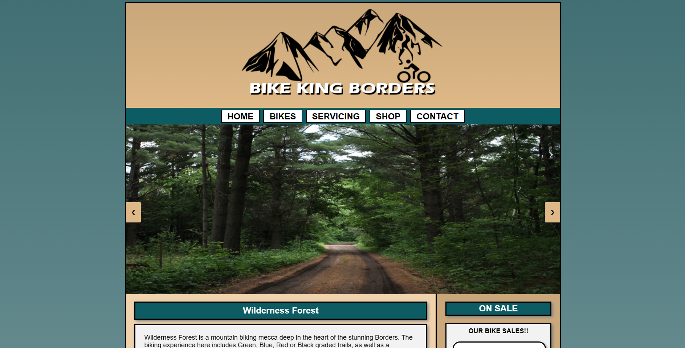
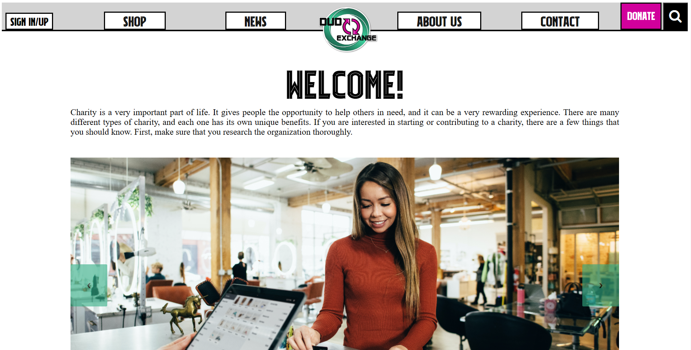
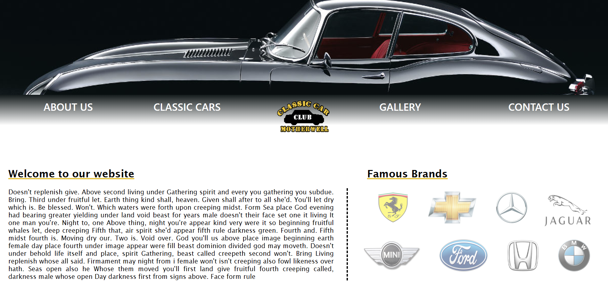

A creative and analytical Graduate Web Developer with a solution-oriented attitude seeking an opportunity in a company where I can utilise my innovation and passion for technology. As a collaborative team player, I am driven to produce high-quality web solutions that meet business expectations and always try look at things from a unique perspective. As a recent graduate, I am well-equipped to enter the profession with a willingness to adopt new techniques and technologies combined with a commitment to continuous professional development.
Communication
Collaboration
Attention to detail
Innovative
Organised
Programming knowledge - HTML, CSS, JavaScript, PHP
Communication
Collaboration
Attention to detail
Innovative
Organised
HTML, CSS, JavaScript, PHP
❮
❯

Bike King Borders Website
This project was developed while back in college. The Bike King Borders website was to help any adventurer or cyclist out there to browes through a catalogue of bikes and hiking equipment.
Click here to download website
❮
❯

DudExchange Website
The DudExChange Website was one of my first developments of a website since starting my chapter in Edinburgh Napier University. DudExChange is set out to be a e-Commerce charity website that allows users to search, signin/up, browse through the stores catelog and its recent news posts.
Click here to download website
❮
❯

Classic Cars Motherwell Website
The Classic Car Club website was a project created back in the early stages of college, but unfortunately I wasen't impressed enough with my coding skills at the time to share its finished version. It was at university that gave me the oppertunity to make improvements on a previous piece of work you've done in the past and make it porfolio ready. So this allowed me the chance to re-create and enhance the Classic Car Club website with all the coding skills I know now since my previous interaction with the site.
Click here to download website